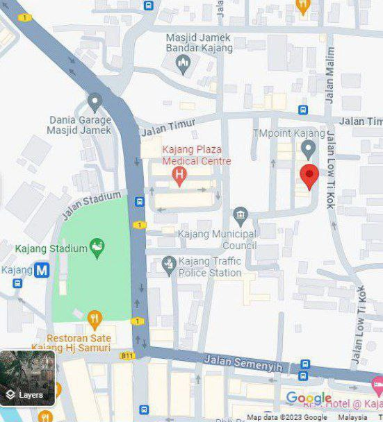

Candle Lab is a partnership business company that handle by five leaders for important position in the organization such as general manager, administrative manager, marketing manager, financial manager, and operating manager. Our business is located at Jalan Metro Avenue, Kajang, Selangor where we find it is strategic to run our business. Our business offers products of various types of candles in terms of essential oils for the business and services in the industry. Our Candle Lab business provide a soothing scent, fresh, and pure which can give satisfaction to our customer.We also make sure our operating business is in line with Candle Lab vision, mission, and objectives. Our objectives were divided into two terms which are short-term goals and long-term goals to ensure that our customer will be satisfied by our good quality products. This can be the reason for them to shop at our shops. Therefore, we really take care of the quality of our products.
There are 7 types of essential oils used in our candle production which are Rose, Fragrant Flowers Night Whore, Remember, Jaundice, White Cambodia, Cape and Jasmine. Our targeted customers include teenagers, employees and family. It is because in this era, they are among the generation who are always facing problems that our products can give a solution for them such as to release stress or treat insomnia. We also meet the company's needs with special events or programs along with promotions as one of our marketing strategies, so many customers will be interested to buy our Candle Lab products. Our company aims to provide high quality products at competitive prices, ensuring useful and worthwhile materials and products for home use. Our products are also unique and very rare to find in this area. Our company will develop and adapt products to meet customer demands and preferences. The company sees potential for success in this area and a major market share in the industry. The Candle Lab is poised to become a leader in the artisanal candle industry, offering a unique blend of quality, customization, and engaging experiences.
| Business Description | |
|---|---|
| Name of Business | Candle Lab |
| Business Address | 22A Jalan Metro Avenue, Metro Avenue 43000 Kajang, Selangor, Malaysia |
| Business legal entity | Partnership |
| Social media | Facebook, WhatsApp, TikTok, Instagram: Candle Lab |
| Email address | candlelab@gmail.com |
| Telephone number | 019-0304 0822 / 03-130903 |
| Factors in selecting the proposed business | Future growth potential can be considering the potential for business growth and expansion in the chosen location. Assess the area’s economic trends, development prospects, and whether it allows for future. |
| Future prospects of the business | Customization and personalization are the trend of customization and personalized products is prevalent across various industries, including candles. Offering customers, the ability to create customized scents, designs, and packaging can attract a niche market seeking unique experiences. |
| Business Location |
 |
We chose this location because it's surrounded by many people. A strategic location for a candle business is crucial for several reasons. It increases visibility, accessibility, target market reach, operational efficiency, and overall business success. A prime location with high foot traffic can attract impulse buyers and increase sales opportunities. Conducting market research helps identify areas where potential customers reside or frequent, allowing businesses to cater directly to their needs. Strategic locations can also provide a competitive advantage by being near competitors or complementary businesses, allowing businesses to benefit from the traffic generated and capitalize on unique selling propositions. |
|---|